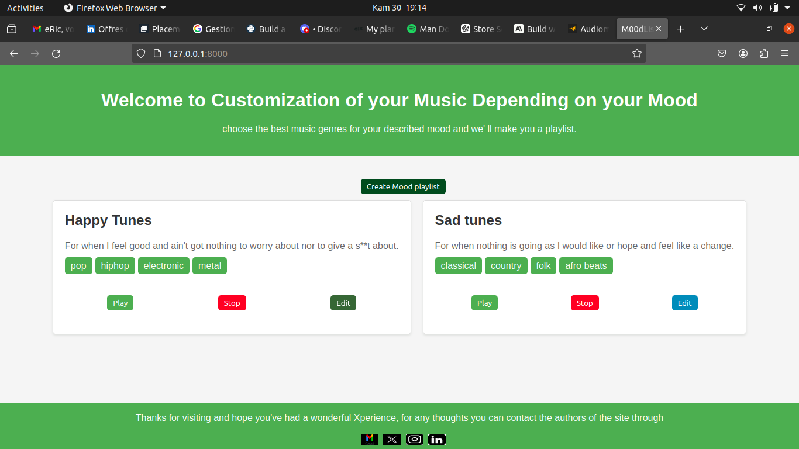

Card creation
Create a card with a name, a description and the kinds of music dependin on how you feel

Playback
Listen to your made playlist
Authentication
Authenticating on MOODList allows saving changes made in your sessions
About
Have you ever felt really sad and know that you needed to be alone but not feeling like being lonely and knew that there was this few select kind of songs you'd like to hear in that specific moment to get you by or maybe you were once studying and it got difficult to focus due to noise in th surroundings or such then this might be soething worth your while just make a card with a name, describe how you feel or don't and then just select a bunch of music genres you're into and sit back and enjoy your tunes.
This was creih the developer of MOODList and these are his socials as well as The project's repo